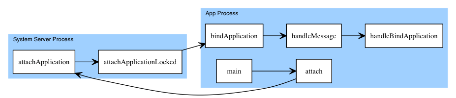

Android插件化原理解析——ContentProvider的插件化
目前为止我们已经完成了Android四大组件中Activity，Service以及BroadcastReceiver的插件化，这几个组件各不相同，我们根据它们的特点定制了不同的插件化方案；那么对于ContentProvider，它又有什么特点？应该如何实现它的插件化？
与Activity，BroadcastReceiver等频繁被使用的组件不同，我们接触和使用ContentProvider的机会要少得多；但是，ContentProvider这个组件对于Android系统有着特别重要的作用——作为一种极其方便的数据共享的手段，ContentProvider使得广大第三方App能够在壁垒森严的系统中自由呼吸。
在Android系统中，每一个应用程序都有自己的用户ID，而每一个应用程序所创建的文件的读写权限都是只赋予给自己所属的用户，这就限制了应用程序之间相互读写数据的操作。应用程序之间如果希望能够进行交互，只能采取跨进程通信的方式；Binder机制能够满足一般的IPC需求，但是如果应用程序之间需要共享大量数据，单纯使用Binder是很难办到的——我相信大家对于Binder 1M缓冲区以及TransactionTooLargeException一定不陌生；ContentProvider使用了匿名共享内存(Ashmem)机制完成数据共享，因此它可以很方便地完成大量数据的传输。Android系统的短信，联系人，相册，媒体库等等一系列的基础功能都依赖与ContentProvider，它的重要性可见一斑。
既然ContentProvider的核心特性是数据共享，那么要实现它的插件化，必须能让插件能够把它的ContentProvider共享给系统——如果不能「provide content」那还叫什么ContentProvider？
但是，如果回想一下Activity等组件的插件化方式，在涉及到「共享」这个问题上，一直没有较好的解决方案：
- 系统中的第三方App无法启动插件中带有特定IntentFilter的Activity，因为系统压根儿感受不到插件中这个真正的Activity的存在。
- 插件中的静态注册的广播并不真正是静态的，而是使用动态注册广播模拟实现的；这就导致如果宿主程序进程死亡，这个静态广播不会起作用；这个问题的根本原因在由于BroadcastReceiver的IntentFilter的不可预知性，使得我们没有办法把静态广播真正“共享”给系统。
- 我们没有办法在第三方App中启动或者绑定插件中的Service组件；因为插件的Service并不是真正的Service组件，系统能感知到的只是那个代理Service；因此如果插件如果带有远程Service组件，它根本不能给第三方App提供远程服务。
虽然在插件系统中一派生机勃勃的景象，Activity，Service等插件组件百花齐放，插件与宿主、插件与插件争奇斗艳；但是一旦脱离了插件系统的温室，这一片和谐景象不复存在：插件组件不过是傀儡而已；活着的，只有宿主——整个插件系统就是一座死寂的鬼城，各个插件组件借尸还魂般地依附在宿主身上，了无生机。
既然希望把插件的ContentProvider共享给整个系统，让第三方的App都能获取到我们插件共享的数据，我们必须解决这个问题；下文将会围绕这个目标展开，完成ContentProvider的插件化，并且顺带给出上述问题的解决方案。阅读本文之前，可以先clone一份 understand-plugin-framework，参考此项目的 contentprovider-management 模块。另外，插件框架原理解析系列文章见 索引。
ContentProvider工作原理
首先我们还是得分析一下ContentProvider的工作原理，很多插件化的思路，以及一些Hook点的发现都严重依赖于对于系统工作原理的理解；对于ContentProvider的插件化，这一点特别重要。
铺垫工作
如同我们通过startActivity来启动Activity一样，与ContentProvider打交道的过程也是从Context类的一个方法开始的，这个方法叫做getContentResolver，使用ContentProvider的典型代码如下：
ContentResolver resolver = content.getContentResolver();
resolver.query(Uri.parse("content://authority/test"), null, null, null, null);
直接去ContextImpl类里面查找的getContentResolver实现，发现这个方法返回的类型是android.app.ContextImpl.ApplicationContentResolver，这个类是抽象类android.content.ContentResolver的子类，resolver.query实际上是调用父类ContentResolver的query实现：
public final @Nullable Cursor query(final @NonNull Uri uri, @Nullable String[] projection,
@Nullable String selection, @Nullable String[] selectionArgs,
@Nullable String sortOrder, @Nullable CancellationSignal cancellationSignal) {
Preconditions.checkNotNull(uri, "uri");
IContentProvider unstableProvider = acquireUnstableProvider(uri);
if (unstableProvider == null) {
return null;
}
IContentProvider stableProvider = null;
Cursor qCursor = null;
try {
long startTime = SystemClock.uptimeMillis();
ICancellationSignal remoteCancellationSignal = null;
if (cancellationSignal != null) {
cancellationSignal.throwIfCanceled();
remoteCancellationSignal = unstableProvider.createCancellationSignal();
cancellationSignal.setRemote(remoteCancellationSignal);
}
try {
qCursor = unstableProvider.query(mPackageName, uri, projection,
selection, selectionArgs, sortOrder, remoteCancellationSignal);
} catch (DeadObjectException e) {
// The remote process has died... but we only hold an unstable
// reference though, so we might recover!!! Let's try!!!!
// This is exciting!!1!!1!!!!1
unstableProviderDied(unstableProvider);
stableProvider = acquireProvider(uri);
if (stableProvider == null) {
return null;
}
qCursor = stableProvider.query(mPackageName, uri, projection,
selection, selectionArgs, sortOrder, remoteCancellationSignal);
}
// 略...
}
注意这里面的那个try..catch语句，query方法首先尝试调用抽象方法acquireUnstableProvider拿到一个IContentProvider对象，并尝试调用这个”unstable”对象的query方法，万一调用失败（抛出DeadObjectExceptopn，熟悉Binder的应该了解这个异常）说明ContentProvider所在的进程已经死亡，这时候会尝试调用acquireProvider这个抽象方法来获取一个可用的IContentProvider（代码里面那个萌萌的注释说明了一切^_^）；由于这两个acquire*都是抽象方法，我们可以直接看子类ApplicationContentResolver的实现：
@Override
protected IContentProvider acquireUnstableProvider(Context c, String auth) {
return mMainThread.acquireProvider(c,
ContentProvider.getAuthorityWithoutUserId(auth),
resolveUserIdFromAuthority(auth), false);
}
@Override
protected IContentProvider acquireProvider(Context context, String auth) {
return mMainThread.acquireProvider(context,
ContentProvider.getAuthorityWithoutUserId(auth),
resolveUserIdFromAuthority(auth), true);
}
可以看到这两个抽象方法最终都通过调用ActivityThread类的acquireProvider获取到IContentProvider，接下来我们看看到底是如何获取到ContentProvider的。
ContentProvider获取过程
ActivityThread类的acquireProvider方法如下，我们需要知道的是，方法的最后一个参数stable代表着ContentProvider所在的进程是否存活，如果进程已死，可能需要在必要的时候唤起这个进程；
public final IContentProvider acquireProvider(
Context c, String auth, int userId, boolean stable) {
final IContentProvider provider = acquireExistingProvider(c, auth, userId, stable);
if (provider != null) {
return provider;
}
IActivityManager.ContentProviderHolder holder = null;
try {
holder = ActivityManagerNative.getDefault().getContentProvider(
getApplicationThread(), auth, userId, stable);
} catch (RemoteException ex) {
}
if (holder == null) {
Slog.e(TAG, "Failed to find provider info for " + auth);
return null;
}
holder = installProvider(c, holder, holder.info,
true /*noisy*/, holder.noReleaseNeeded, stable);
return holder.provider;
}
这个方法首先通过acquireExistingProvider尝试从本进程中获取ContentProvider，如果获取不到，那么再请求AMS获取对应ContentProvider；想象一下，如果你查询的是自己App内部的ContentProvider组件，干嘛要劳烦AMS呢？不论是从哪里获取到的ContentProvider，获取完毕之后会调用installProvider来安装ContentProvider。
OK打住，我们思考一下，如果要实现ContentProvider的插件化，我们需要完成一些什么工作？开篇的时候我提到了数据共享，那么具体来说，实现插件的数据共享，需要完成什么？ContentProvider是一个数据共享组件，也就是说它不过是一个携带数据的载体而已。为了支持跨进程共享，这个载体是Binder调用，为了共享大量数据，使用了匿名共享内存；这么说还是有点抽象，那么想一下，给出一个ContentProvider，你能对它做一些什么操作？如果能让插件支持这些操作，不就支持了插件化么？这就是典型的duck type思想——如果一个东西看起来像ContentProvider，用起来也像ContentProvider，那么它就是ContentProvider。
ContentProvider主要支持query, insert, update, delete操作，由于这个组件一般工作在别的进程，因此这些调用都是Binder调用。从上面的代码可以看到，这些调用最终都是委托给一个IContentProvider的Binder对象完成的，如果我们Hook掉这个对象，那么对于ContentProvider的所有操作都会被我们拦截掉，这时候我们可以做进一步的操作来完成对于插件ContentProvider组件的支持。要拦截这个过程，我们可以假装插件的ContentProvider是自己App的ContentProvider，也就是说，让acquireExistingProvider方法可以直接获取到插件的ContentProvider，这样我们就不需要欺骗AMS就能完成插件化了。当然，你也可以选择Hook掉AMS，让AMS的getContentProvider方法返回被我们处理过的对象，这也是可行的；但是，为什么要舍近求远呢？
从上文的分析暂时得出结论：我们可以把插件的ContentProvider信息预先放在App进程内部，使得对于ContentProvider执行CURD操作的时候，可以获取到插件的组件，这样或许就可以实现插件化了。具体来说，我们要做的事情就是让ActivityThread的acquireExistingProvider方法能够返回插件的ContentProvider信息，我们看看这个方法的实现：
public final IContentProvider acquireExistingProvider(
Context c, String auth, int userId, boolean stable) {
synchronized (mProviderMap) {
final ProviderKey key = new ProviderKey(auth, userId);
final ProviderClientRecord pr = mProviderMap.get(key);
if (pr == null) {
return null;
}
// 略。。
}
}
可以看出，App内部自己的ContentProvider信息保存在ActivityThread类的mProviderMap中，这个map的类型是ArrayMap；我们当然可以通过反射修改这个成员变量，直接把插件的ContentProvider信息填进去，但是这个ProviderClientRecord对象如何构造？我们姑且看看系统自己是如果填充这个字段的。在ActivityThread类中搜索一遍，发现调用mProviderMap对象的put方法的之后installProviderAuthoritiesLocked，而这个方法最终被installProvider方法调用。在分析ContentProvider的获取过程中我们已经知道，不论是通过本进程的acquireExistingProvider还是借助AMS的getContentProvider得到ContentProvider，最终都会对这个对象执行installProvider操作，也就是「安装」在本进程内部。那么，我们接着看这个installProvider做了什么，它是如何「安装」ContentProvider的。
进程内部ContentProvider安装过程
首先，如果之前没有“安装”过，那么holder为null，下面的代码会被执行，
final java.lang.ClassLoader cl = c.getClassLoader();
localProvider = (ContentProvider)cl.
loadClass(info.name).newInstance();
provider = localProvider.getIContentProvider();
if (provider == null) {
Slog.e(TAG, "Failed to instantiate class " +
info.name + " from sourceDir " +
info.applicationInfo.sourceDir);
return null;
}
if (DEBUG_PROVIDER) Slog.v(
TAG, "Instantiating local provider " + info.name);
// XXX Need to create the correct context for this provider.
localProvider.attachInfo(c, info);
比较直观，直接load这个ContentProvider所在的类，然后用反射创建出这个ContentProvider对象；但是由于查询是需要进行跨进程通信的，在本进程创建出这个对象意义不大，所以我们需要取出ContentProvider承载跨进程通信的Binder对象IContentProvider；创建出对象之后，接下来就是构建合适的信息，保存在ActivityThread内部，也就是mProviderMap：
if (localProvider != null) {
ComponentName cname = new ComponentName(info.packageName, info.name);
ProviderClientRecord pr = mLocalProvidersByName.get(cname);
if (pr != null) {
if (DEBUG_PROVIDER) {
Slog.v(TAG, "installProvider: lost the race, "
+ "using existing local provider");
}
provider = pr.mProvider;
} else {
holder = new IActivityManager.ContentProviderHolder(info);
holder.provider = provider;
holder.noReleaseNeeded = true;
pr = installProviderAuthoritiesLocked(provider, localProvider, holder);
mLocalProviders.put(jBinder, pr);
mLocalProvidersByName.put(cname, pr);
}
retHolder = pr.mHolder;
} else {
以上就是安装代码，不难理解。
思路尝试——本地安装
那么，了解了「安装」过程再结合上文的分析，我们似乎可以完成ContentProvider的插件化了——直接把插件的ContentProvider安装在进程内部就行了。如果插件系统有多个进程，那么必须在每个进程都「安装」一遍，如果你熟悉Android进程的启动流程那么就会知道，这个安装ContentProvider的过程适合放在Application类中，因为每个Android进程启动的时候，App的Application类是会被启动的。
看起来实现ContentProvider的思路有了，但是这里实际上有一个严重的缺陷！
我们依然没有解决「共享」的问题。我们只是在插件系统启动的进程里面的ActivityThread的mProviderMap给修改了，这使得只有通过插件系统启动的进程，才能感知到插件中的ContentProvider(因为我们手动把插件中的信息install到这个进程中去了)；如果第三方的App想要使用插件的ContentProvider，那系统只会告诉它查无此人。
那么，我们应该如何解决共享这个问题呢？看来还是逃不过AMS的魔掌，我们继续跟踪源码，看看如果在本进程查询不到ContentProvider，AMS是如何完成这个过程的。在ActivityThread的acquireProvider方法中我们提到，如果acquireExistingProvider方法返回null，会调用ActivityManagerNative的getContentProvider方法通过AMS查询整个系统中是否存在需要的这个ContentProvider。如果第三方App查询插件系统的ContentProvider必然走的是这个流程，我们仔细分析一下这个过程；
AMS中的ContentProvider
首先我们查阅ActivityManagerService的getContentProvider方法，这个方法间接调用了getContentProviderImpl方法；getContentProviderImpl方法体相当的长，但是实际上只做了两件事件事（我这就不贴代码了，读者可以对着源码看一遍）：
- 使用PackageManagerService的resolveContentProvider根据Uri中提供的auth信息查阅对应的ContentProivoder的信息ProviderInfo。
- 根据查询到的ContentProvider信息，尝试将这个ContentProvider组件安装到系统上。
查询ContentProvider组件的过程
查询ContentProvider组件的过程看起来很简单，直接调用PackageManager的resolveContentProvider就能从URI中获取到对应的ProviderInfo信息：
@Override
public ProviderInfo resolveContentProvider(String name, int flags, int userId) {
if (!sUserManager.exists(userId)) return null;
// reader
synchronized (mPackages) {
final PackageParser.Provider provider = mProvidersByAuthority.get(name);
PackageSetting ps = provider != null
? mSettings.mPackages.get(provider.owner.packageName)
: null;
return ps != null
&& mSettings.isEnabledLPr(provider.info, flags, userId)
&& (!mSafeMode || (provider.info.applicationInfo.flags
&ApplicationInfo.FLAG_SYSTEM) != 0)
? PackageParser.generateProviderInfo(provider, flags,
ps.readUserState(userId), userId)
: null;
}
}
但是实际上我们关心的是，这个mProvidersByAuthority里面的信息是如何添加进PackageManagerService的，会在什么时候更新？在PackageManagerService这个类中搜索mProvidersByAuthority.put这个调用，会发现在scanPackageDirtyLI会更新mProvidersByAuthority这个map的信息，接着往前追踪会发现：这些信息是在Android系统启动的时候收集的。也就是说，Android系统在启动的时候会扫描一些App的安装目录，典型的比如/data/app/*，获取这个目录里面的apk文件，读取其AndroidManifest.xml中的信息，然后把这些信息保存在PackageManagerService中。合理猜测，在系统启动之后，安装新的App也会触发对新App中AndroidManifest.xml的操作，感兴趣的读者可以自行翻阅源码。
现在我们知道，查询ContentProvider的信息来源在Android系统启动的时候已经初始化好了，这个过程对于我们第三方app来说是鞭长莫及，想要使用类似在进程内部Hack ContentProvider的查找过程是不可能的。
安装ContentProvider组件的过程
获取到URI对应的ContentProvider的信息之后，接下来就是把它安装到系统上了，这样以后有别的查询操作就可以直接拿来使用；但是这个安装过程AMS是没有办法以一己之力完成的。想象一下App DemoA 查询App DemoB 的某个ContentProviderAppB，那么这个ContentProviderAppB必然存在于DemoB这个App中，AMS所在的进程(system_server)连这个ContentProviderAppB的类都没有，因此，AMS必须委托DemoB完成它的ContentProviderAppB的安装；这里就分两种情况：其一，DemoB这个App已经在运行了，那么AMS直接通知DemoB安装ContentProviderAppB（如果B已经安装了那就更好了）；其二，DemoB这个app没在运行，那么必须把B进程唤醒，让它干活；这个过程也就是ActivityManagerService的getContentProviderImpl方法所做的，如下代码：
if (proc != null && proc.thread != null) {
if (!proc.pubProviders.containsKey(cpi.name)) {
proc.pubProviders.put(cpi.name, cpr);
try {
proc.thread.scheduleInstallProvider(cpi);
} catch (RemoteException e) {
}
}
} else {
proc = startProcessLocked(cpi.processName,
cpr.appInfo, false, 0, "content provider",
new ComponentName(cpi.applicationInfo.packageName,
cpi.name), false, false, false);
if (proc == null) {
return null;
}
}
如果查询的ContentProvider所在进程处于运行状态，那么AMS会通过这个进程给AMS的ApplicationThread这个Binder对象完成scheduleInstallProvider调用，这个过程比较简单，最终会调用到目标进程的installProvider方法，而这个方法我们在上文已经分析过了。我们看一下如果目标进程没有启动，会发生什么情况。
如果ContentProvider所在的进程已经死亡，那么会调用startProcessLocked来启动新的进程，startProcessLocked有一系列重载函数，我们一路跟踪，发现最终启动进程的操作交给了Process类的start方法完成，这个方法通过socket与Zygote进程进行通信，通知Zygote进程fork出一个子进程，然后通过反射调用了之前传递过来的一个入口类的main函数，一般来说这个入口类就是ActivityThread，因此子进程fork出来之后会执行ActivityThread类的main函数。
在我们继续观察子进程ActivityThread的main函数执行之前，我们看看AMS进程这时候会干什么——startProcessLocked之后AMS进程和fork出来的DemoB进程分道扬镳；AMS会继续往下面执行。我们暂时回到AMS的getContentProviderImpl方法：
// Wait for the provider to be published...
synchronized (cpr) {
while (cpr.provider == null) {
if (cpr.launchingApp == null) {
return null;
}
try {
if (conn != null) {
conn.waiting = true;
}
cpr.wait();
} catch (InterruptedException ex) {
} finally {
if (conn != null) {
conn.waiting = false;
}
}
}
}
你没看错，一个死循环就是糊在上面：AMS进程会通过一个死循环等到进程B完成ContentProvider的安装，等待完成之后会把ContentProvider的信息返回给进程A。那么，我们现在的疑惑是，进程B在启动之后，在哪个时间点会完成ContentProvider的安装呢？
我们接着看ActivityThread的main函数，顺便寻找我们上面那个问题的答案；这个分析实际上就是Android App的启动过程，更详细的过程可以参阅老罗的文章 Android应用程序启动过程源代码分析，这里只给出简要调用流程：

最终，DemoB进程启动之后会执行ActivityThread类的handleBindApplication方法，这个方法相当之长，基本完成了App进程启动之后所有必要的操作；这里我们只关心ContentProvider相关的初始化操作，代码如下：
// If the app is being launched for full backup or restore, bring it up in
// a restricted environment with the base application class.
Application app = data.info.makeApplication(data.restrictedBackupMode, null);
mInitialApplication = app;
// don't bring up providers in restricted mode; they may depend on the
// app's custom Application class
if (!data.restrictedBackupMode) {
List<ProviderInfo> providers = data.providers;
if (providers != null) {
installContentProviders(app, providers);
// For process that contains content providers, we want to
// ensure that the JIT is enabled "at some point".
mH.sendEmptyMessageDelayed(H.ENABLE_JIT, 10*1000);
}
}
// Do this after providers, since instrumentation tests generally start their
// test thread at this point, and we don't want that racing.
try {
mInstrumentation.onCreate(data.instrumentationArgs);
}
catch (Exception e) {
}
try {
mInstrumentation.callApplicationOnCreate(app);
} catch (Exception e) {
}
仔细观察以上代码，你会发现：ContentProvider的安装比Application的onCreate回调还要早！！因此，分析到这里我们已经明白了前面提出的那个问题，进程启动之后会在Applition类的onCreate 回调之前，在Application对象创建之后完成ContentProvider的安装。
然后不要忘了，我们的AMS进程还在那傻傻等待DemoB进程完成ContentProviderAppB的安装呢！在DemoB的Application的onCreate回调之前，DemoB的ContentProviderAppB已经安装好了，因此AMS停止等待，把DemoB安装的结果返回给请求这个ContentProvider的DemoA。我们必须对这个时序保持敏感，有时候就是失之毫厘，差之千里！！
到这里，有关ContentProvider的调用过程以及简要的工作原理我们已经分析完毕，关于它如何共享数据，如何使用匿名共享内存这部分不是插件化的重点，感兴趣的可以参考 Android应用程序组件Content Provider在应用程序之间共享数据的原理分析。
不同之处
在实现ContentProvider的插件化之前，通过分析这个组件的工作原理，我们可以得出它的一些与众不同的特性：
- ContentProvider本身是用来共享数据的，因此它提供一般的CURD服务；它类似HTTP这种无状态的服务，没有Activity，Service所谓的生命周期的概念，服务要么可用，要么不可用；对应着ContentProvider要么启动，要么随着进程死亡；而通常情况下，死亡之后还会被系统启动。所以，ContentProvider，只要有人需要这个服务，系统可以保证是永生的；这是与其他组件的最大不同；完全不用考虑生命周期的概念。
- ContentProvider被设计为共享数据，这种数据量一般来说是相当大的；熟悉Binder的人应该知道，Binder进行数据传输有1M限制，因此如果要使用Binder传输大数据，必须使用类似socket的方式一段一段的读，也就是说需要自己在上层架设一层协议；ContentProvider并没有采取这种方式，而是采用了Android系统的匿名共享内存机制，利用Binder来传输这个文件描述符，进而实现文件的共享；这是第二个不同，因为其他的三个组建通信都是基于Binder的，只有ContentProvider使用了Ashmem。
- 一个App启动过程中，ContentProvider组件的启动是非常早的，甚至比Application的onCreate还要早；我们可以利用这个特性结合它不死的特点，完成一些有意义的事情。
- ContentProvider存在优先查询本进程的特点，使得它的插件化甚至不需要Hook AMS就能完成。
思路分析
在分析ContentProvider的工作原理的过程中我们提出了一种插件化方案：在进程启动之初，手动把ContentProvider安装到本进程，使得后续对于插件ContentProvider的请求能够顺利完成。我们也指出它的一个严重缺陷，那就是它只能在插件系统内部掩耳盗铃，在插件系统之外，第三方App依然无法感知到插件中的ContentProvider的存在。
如果插件的ContentProvider组件仅仅是为了共享给其他插件或者宿主程序使用，那么这种方案可以解决问题；不需要Hook AMS，非常简单。
但是，如果希望把插件ContenProvider共享给整个系统呢？在分析AMS中获取ContentProvider的过程中我们了解到，ContentProvider信息的注册是在Android系统启动或者新安装App的时候完成的，而AMS把ContentProvider返回给第三方App也是在system_server进程完成；我们无法对其暗箱操作。
在完成Activity，Service组件的插件化之后，这种限制对我们来说已经是小case了：我们在宿主程序里面注册一个货真价实、被系统认可的StubContentProvider组件，把这个组件共享给第三方App；然后通过代理分发技术把第三方App对于插件ContentProvider的请求通过这个StubContentProvider分发给对应的插件。
但是这还存在一个问题，由于第三方App查阅的其实是StubContentProvider，因此他们查阅的URI也必然是StubContentProvider的authority，要查询到插件的ContentProvider，必须把要查询的真正的插件ContentProvider信息传递进来。这个问题的解决方案也很容易，我们可以制定一个「插件查询协议」来实现。
举个例子，假设插件系统的宿主程序在AndroidManifest.xml中注册了一个StubContentProvider，它的Authority为com.test.host_authority；由于这个组件被注册在AndroidManifest.xml中，是系统认可的ContentProvider组件，整个系统都是可以使用这个共享组件的，使用它的URI一般为content://com.test.host_authority；那么，如果插件系统中存在一个插件，这个插件提供了一个PluginContentProvider，它的Authority为com.test.plugin_authorith，因为这个插件的PluginContentProvider没有在宿主程序的AndroidMainifest.xml中注册（预先注册就失去插件的意义了），整个系统是无法感知到它的存在的；前面提到代理分发技术，也就是，我们让第三方App请求宿主程序的StubContentProvider，这个StubContentProvider把请求转发给合适的插件的ContentProvider就能完成了(插件内部通过预先installProvider可以查询所有的ContentProvider组件)；这个协议可以有很多，比如说：如果第三方App需要请求插件的StubContentProvider，可以以 content://com.test.host_authority/com.test.plugin_authorith去查询系统；也就是说，我们假装请求StubContentProvider，把真正的需要请求的PluginContentProvider的Authority放在路径参数里面，StubContentProvider收到这个请求之后，拿到这个真正的Authority去请求插件的PluginContentProvider，拿到结果之后再返回给第三方App。
这样，我们通过「代理分发技术」以及「插件查询协议」可以完美解决「共享」的问题，开篇提到了我们之前对于Activity，Service组件插件化方案中对于「共享」功能的缺失，按照这个思路，基本可以解决这一系列问题。比如，对于第三方App无法绑定插件服务的问题，我们可以注册一个StubService，把真正需要bind的插件服务信息放在intent的某个字段中，然后在StubService的onBind中解析出这个插件服务信息，然后去拿到插件Service组件的Binder对象返回给第三方。
实现
上文详细分析了如何实现ContentProvider的插件化，接下来我们就实现这个过程。
预先installProvider
要实现预先installProvider，我们首先需要知道，所谓的「预先」到底是在什么时候？
前文我们提到过App进程安装ContentProvider的时机非常之早，在Application类的onCreate回调执行之前已经完成了；这意味着什么？
现在我们对于ContentProvider插件化的实现方式是通过「代理分发技术」，也就是说在请求插件ContentProvider的时候会先请求宿主程序的StubContentProvider；如果一个第三方App查询插件的ContentProvider，而宿主程序没有启动的话，AMS会启动宿主程序并等待宿主程序的StubContentProvider完成安装，一旦安装完成就会把得到的IContentProvider返回给这个第三方App；第三方App拿到IContentProvider这个Binder对象之后就可能发起CURD操作，如果这个时候插件ContentProvider还没有启动，那么肯定就会出异常；要记住，“这个时候”可能宿主程序的onCreate还没有执行完毕呢！！
所以，我们基本可以得出结论，预先安装这个所谓的「预先」必须早于Application的onCreate方法，在Android SDK给我们的回调里面，attachBaseContent这个方法是可以满足要求的，它在Application这个对象被创建之后就会立即调用。
解决了时机问题，那么我们接下来就可以安装ContentProvider了。
安装ContentProvider也就是要调用ActivityThread类的installProvider方法，这个方法需要的参数有点多，而且它的第二个参数IActivityManager.ContentProviderHolder是一个隐藏类，我们不知道如何构造，就算通过反射构造由于SDK没有暴露稳定性不易保证，我们看看有什么方法调用了这个installProvider。
installContentProviders这个方法直接调用installProvder看起来可以使用，但是它是一个private的方法，还有public的方法吗？继续往上寻找调用链，发现了installSystemProviders这个方法：
public final void installSystemProviders(List<ProviderInfo> providers) {
if (providers != null) {
installContentProviders(mInitialApplication, providers);
}
}
但是，我们说过ContentProvider的安装必须相当早，必须在Application类的attachBaseContent方法内，而这个mInitialApplication字段是在onCreate方法调用之后初始化的，所以，如果直接使用这个installSystemProviders势必抛出空指针异常；因此，我们只有退而求其次，选择通过installContentProviders这个方法完成ContentProvider的安装
要调用这个方法必须拿到ContentProvider对应的ProviderInfo，这个我们在之前也介绍过，可以通过PackageParser类完成，当然这个类有一些兼容性问题，我们需要手动处理：
/**
* 解析Apk文件中的 <provider>, 并存储起来
* 主要是调用PackageParser类的generateProviderInfo方法
*
* @param apkFile 插件对应的apk文件
* @throws Exception 解析出错或者反射调用出错, 均会抛出异常
*/
public static List<ProviderInfo> parseProviders(File apkFile) throws Exception {
Class<?> packageParserClass = Class.forName("android.content.pm.PackageParser");
Method parsePackageMethod = packageParserClass.getDeclaredMethod("parsePackage", File.class, int.class);
Object packageParser = packageParserClass.newInstance();
// 首先调用parsePackage获取到apk对象对应的Package对象
Object packageObj = parsePackageMethod.invoke(packageParser, apkFile, PackageManager.GET_PROVIDERS);
// 读取Package对象里面的services字段
// 接下来要做的就是根据这个List<Provider> 获取到Provider对应的ProviderInfo
Field providersField = packageObj.getClass().getDeclaredField("providers");
List providers = (List) providersField.get(packageObj);
// 调用generateProviderInfo 方法, 把PackageParser.Provider转换成ProviderInfo
Class<?> packageParser$ProviderClass = Class.forName("android.content.pm.PackageParser$Provider");
Class<?> packageUserStateClass = Class.forName("android.content.pm.PackageUserState");
Class<?> userHandler = Class.forName("android.os.UserHandle");
Method getCallingUserIdMethod = userHandler.getDeclaredMethod("getCallingUserId");
int userId = (Integer) getCallingUserIdMethod.invoke(null);
Object defaultUserState = packageUserStateClass.newInstance();
// 需要调用 android.content.pm.PackageParser#generateProviderInfo
Method generateProviderInfo = packageParserClass.getDeclaredMethod("generateProviderInfo",
packageParser$ProviderClass, int.class, packageUserStateClass, int.class);
List<ProviderInfo> ret = new ArrayList<>();
// 解析出intent对应的Provider组件
for (Object service : providers) {
ProviderInfo info = (ProviderInfo) generateProviderInfo.invoke(packageParser, service, 0, defaultUserState, userId);
ret.add(info);
}
return ret;
}
解析出ProviderInfo之后，就可以直接调用installContentProvider了：
/**
* 在进程内部安装provider, 也就是调用 ActivityThread.installContentProviders方法
*
* @param context you know
* @param apkFile
* @throws Exception
*/
public static void installProviders(Context context, File apkFile) throws Exception {
List<ProviderInfo> providerInfos = parseProviders(apkFile);
for (ProviderInfo providerInfo : providerInfos) {
providerInfo.applicationInfo.packageName = context.getPackageName();
}
Log.d("test", providerInfos.toString());
Class<?> activityThreadClass = Class.forName("android.app.ActivityThread");
Method currentActivityThreadMethod = activityThreadClass.getDeclaredMethod("currentActivityThread");
Object currentActivityThread = currentActivityThreadMethod.invoke(null);
Method installProvidersMethod = activityThreadClass.getDeclaredMethod("installContentProviders", Context.class, List.class);
installProvidersMethod.setAccessible(true);
installProvidersMethod.invoke(currentActivityThread, context, providerInfos);
}
整个安装过程必须在Application类的attachBaseContent里面完成：
/**
* 一定需要Application，并且在attachBaseContext里面Hook
* 因为provider的初始化非常早，比Application的onCreate还要早
* 在别的地方hook都晚了。
*
* @author weishu
* @date 16/3/29
*/
public class UPFApplication extends Application {
@Override
protected void attachBaseContext(Context base) {
super.attachBaseContext(base);
try {
File apkFile = getFileStreamPath("testcontentprovider-debug.apk");
if (!apkFile.exists()) {
Utils.extractAssets(base, "testcontentprovider-debug.apk");
}
File odexFile = getFileStreamPath("test.odex");
// Hook ClassLoader, 让插件中的类能够被成功加载
BaseDexClassLoaderHookHelper.patchClassLoader(getClassLoader(), apkFile, odexFile);
ProviderHelper.installProviders(base, getFileStreamPath("testcontentprovider-debug.apk"));
} catch (Exception e) {
throw new RuntimeException("hook failed", e);
}
}
}
代理分发以及协议解析
把插件中的ContentProvider安装到插件系统中之后，在插件内部就可以自由使用这些ContentProvider了；要把这些插件共享给整个系统，我们还需要一个货真价实的ContentProvider组件来执行分发：
<provider
android:name="com.example.weishu.contentprovider_management.StubContentProvider"
android:authorities="com.example.weishu.contentprovider_management.StubContentProvider"
android:process=":p"
android:exported="true" />
第三方App如果要查询到插件的ContentProvider，必须遵循一个「插件查询协议」，这样StubContentProvider才能把对于插件的请求分发到正确的插件组件：
/**
* 为了使得插件的ContentProvder提供给外部使用，我们需要一个StubProvider做中转；
* 如果外部程序需要使用插件系统中插件的ContentProvider，不能直接查询原来的那个uri
* 我们对uri做一些手脚，使得插件系统能识别这个uri；
*
* 这里的处理方式如下：
*
* 原始查询插件的URI应该为：
* content://plugin_auth/path/query
*
* 如果需要查询插件，需要修改为：
*
* content://stub_auth/plugin_auth/path/query
*
* 也就是，我们把插件ContentProvider的信息放在URI的path中保存起来；
* 然后在StubProvider中做分发。
*
* 当然，也可以使用QueryParamerter,比如：
* content://plugin_auth/path/query/ -> content://stub_auth/path/query?plugin=plugin_auth
* @param raw 外部查询我们使用的URI
* @return 插件真正的URI
*/
private Uri getRealUri(Uri raw) {
String rawAuth = raw.getAuthority();
if (!AUTHORITY.equals(rawAuth)) {
Log.w(TAG, "rawAuth:" + rawAuth);
}
String uriString = raw.toString();
uriString = uriString.replaceAll(rawAuth + '/', "");
Uri newUri = Uri.parse(uriString);
Log.i(TAG, "realUri:" + newUri);
return newUri;
}
通过以上过程我们就实现了ContentProvider的插件化。需要说明的是，DroidPlugind的插件化与上述介绍的方案有一些不同之处：
- 首先DroidPlugin并没有选择预先安装的方案，而是选择Hook ActivityManagerNative，拦截它的getContentProvider以及publishContentProvider方法实现对于插件组件的控制；从这里可以看出它对ContentProvider与Service的插件化几乎是相同的，Hook才是DroidPlugin Style ^_^.
- 然后，关于携带插件信息，或者说「插件查询协议」方面；DroidPlugin把插件信息放在查询参数里面，本文呢则是路径参数；这一点完全看个人喜好。
小结
本文我们通过「代理分发技术」以及「插件查询协议」完成了ContentProvider组件的插件化，并且给出了对「插件共享组件」的问题的一般解决方案。值得一提的是，系统的ContentProvider其实是lazy load的，也就是说只有在需要使用的时候才会启动对应的ContentProvider，而我们对于插件的实现则是预先加载，这里还有改进的空间，读者可以思考一下解决方案。
由于ContentProvider的使用频度非常低，而很多它使用的场景（比如系统）并不太需要「插件化」，因此在实际的插件方案中，提供ContentProvider插件化的方案非常之少；就算需要实现ContentProvider的插件化，也只是解决插件内部之间共享组件的问题，并没有把插件组件暴露给整个系统。我个人觉得，如果只是希望插件化，那么是否支持ContentProvider无伤大雅，但是，如果希望实现虚拟化或者说容器技术，所有组件是必须支持插件化的。
至此，对于Android系统的四大组件的插件化已经全部介绍完毕；由于是最后一个要介绍的组件，我并没有像之前一样先给出组件的运行原理，然后一通分析最后给出插件方案，而是一边分析代码一边给出自己的思路，把思考——推翻——改进的整个过程完全展现了出来，Android的插件化已经到达了百花齐放的阶段，插件化之路也不只有一条，但是万变不离其宗，希望我的分析和思考对各位读者理解甚至创造插件化方案带来帮助。接下来我会介绍「插件通信机制」，它与本文的ContentProvider以及我反复强调过的一些特性密切相关，敬请期待！
喜欢就点个赞吧，兜里有一块钱的童鞋可以点击下面的打赏然后扫一下二维码哦～持续更新，请关注github项目 understand-plugin-framework 和我的 博客! 另外很抱歉一个多月没有更新博客了，每天看到各位的来访记录深感惭愧，实在是业务繁忙，身不由已！不出意外接下来会以正常速度更新内容，谢谢支持 ^_^